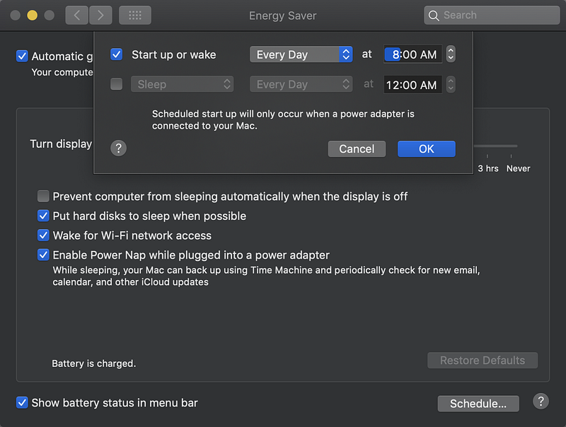
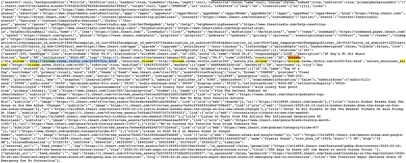
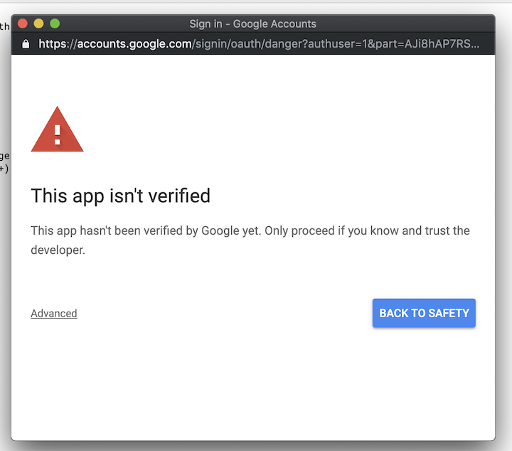
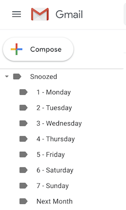
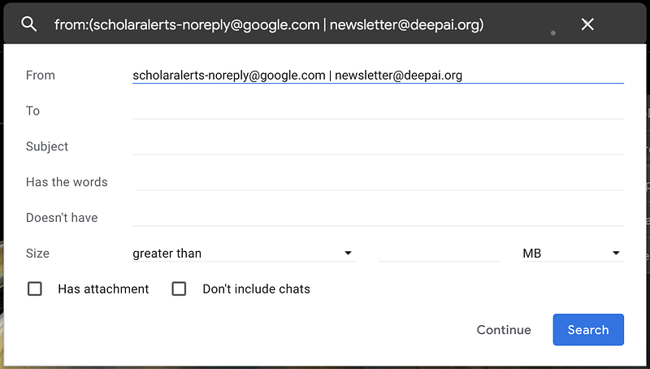
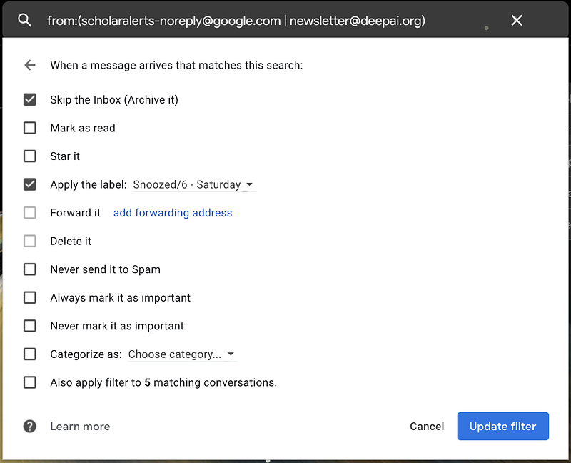

I've recently discovered how to configure Gmail such that certain emails reach my inbox on a specific day and I thought this trick might be useful to others. Effectively, new emails from a sender can be snoozed automatically until a time of your choosing.
As an example, let's assume you've created a Google Scholar email alert for new papers by Yoshua Bengio. These email alerts reach your inbox at an arbitrary time which you cannot specify. The only time you want to look at these emails is on a Saturday and in the meantime, they clutter your inbox. Your options are to ignore them or to manually snooze them until Saturday (extra clicks). The solution proposed here automatically snoozes these emails until Saturday as soon as Google Scholar sends them to you. Another reason you might want to automatically snooze emails is to be able to save time by batch-processing certain emails on a specific day.
To implement the solution, two steps are required: 1) inbox labels have to be generated and 2) a filter has to be created for archiving and labelling incoming mail.
1) Snooze Labels
To get started, go to this Google Apps Script. On the Code.gs page select Run > Run function > GmailLabelSetup.
You'll be prompted to authorize the script as shown below. Select Review Permissions and allow access. Alternatively, follow the excellent instructions by Ralph Slooten to create your own Google Apps Script, or copy my code into your own script.
This app hasn't been verified yet, so you'll have to click Advanced on the following screen and follow the links to allow the script.
Once the function has completed, you'll see a new set of labels in your Gmail as shown below:
Note: I haven't tried snoozing until a specific time of day, but it is possible with some changes to the code.
2) Inbox Filters
The final step is to navigate to the gear icon (top right) in your Gmail, then select Settings > Filters and Blocked Addresses > Create a new filter. In the "From" field, fill in the sender address that you want to snooze. If you want to snooze multiple senders, use the pipe symbol "|" as shown below:
Click Continue and select Skip the Inbox and Apply the label to choose the day that you want to receive emails from the above-specified sender.
And voila! Emails from the specified senders will now appear in your inbox on the specified day. I hope this helps you save some time and email clutter.